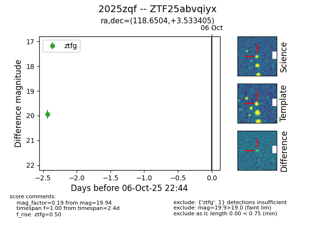

FINK: ZTF25abvqiyx
Lasair: ZTF25abvqiyx
ALeRCE: ZTF25abvqiyx
TNS: 2025zqf
YSE: 2025zqf
ZTF25abvqiyx (ztf,fink)
2025zqf (tns,yse)
equatorial (ra, dec) = (118.6504,+3.53340)
galactic (l, b) = (217.0411,+15.65431)

last ztfg=19.94
1 ztfg detections